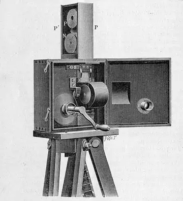

Nossa História
O portal Cinema TOP Nosso cinema nasceu da paixão pelo mundo do entretenimento e pelo fascínio que os filmes despertam nas pessoas. O projeto foi criado com o objetivo de oferecer um espaço moderno e acolhedor, reunindo diversão, tecnologia e conforto em um só lugar.
Ao longo do tempo, o cinema tornou-se muito mais do que um local para assistir a filmes. É um ambiente para compartilhar momentos especiais, conhecer grandes histórias e viver emoções inesquecíveis. Nossa proposta é trazer os melhores lançamentos e proporcionar uma experiência de qualidade para todos os públicos.
Acreditamos que cada filme tem uma história capaz de marcar vidas. Por isso, investimos em salas modernas, telas de alta definição, som de qualidade e poltronas confortáveis. Nosso compromisso é transformar cada sessão em uma experiência única, onde a magia do cinema ganha vida!

Nossos Pilares
Tradição
A tradição do cinema começou em 1895, na França, e evoluiu dos filmes mudos e em preto e branco para grandes produções modernas. Ao longo dos anos, tornou-se uma das principais formas de entretenimento, reunindo pessoas para compartilhar histórias, emoções e momentos especiais.
Engenharia
A engenharia dos primeiros cinemas era simples, mas inovadora para a época. As salas utilizavam projetores mecânicos, grandes telas brancas e equipamentos de som básicos. Os espaços eram construídos para acomodar o público e proporcionar uma boa visão das imagens. Com o avanço da tecnologia, os cinemas ganharam melhores estruturas, conforto e equipamentos modernos.
Comunidade
A comunidade dos primeiros cinemas era formada por pessoas curiosas e apaixonadas pelas novidades do entretenimento. Ir ao cinema era uma experiência especial, que reunia famílias, amigos e moradores da cidade para assistir às primeiras produções. Com o tempo, esses espaços se tornaram importantes pontos de encontro e convivência social.